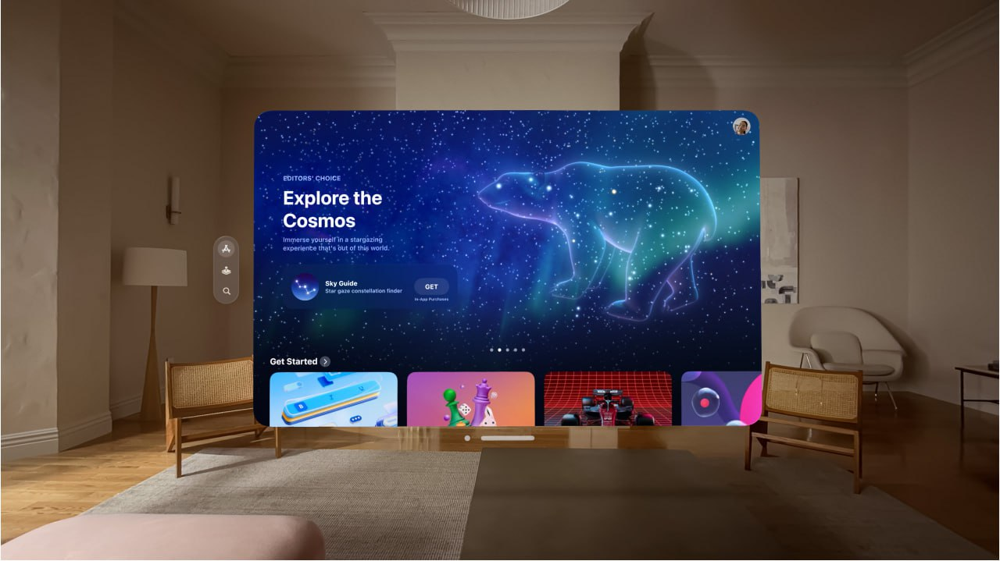

- l'introduction
- Quels sont les domaines d'utilisation de apple vision pro?
- Quels sont les composantsde l'appareil?
- Comment fonctionne cet appareil?
- quelles application cet appareil contient-il?
- Y a-t-il une intelligence artificielle dans cet appareil?
- le vision pro est il aussi securiseque les autres appareils apple?
- Quels sont avantage et inconvenientsde cet appareil?
apple vision pro
En juin 2023, Apple a lancé un nouveau produit appelé Apple Vision Pro, qui a fait beaucoup parler de lui dès sa sortie. Leur annonce sur YouTube a été vue plus de 25 millions de fois en seulement 24 heures.
On a dit qu'Apple a marqué l'histoire en inventant un appareil et en utilisant des technologies modernes pour la première fois, même si c'était un peu exagéré pour la publicité. par exemple:
la réalité augmentée.
la réalité augmentée. Cela consiste à améliorer la réalité en y ajoutant des éléments pratiques. Mais si on y pense, est-ce que ce n'est pas ce que font déjà les téléphones, les ordinateurs et les appareils photo ? Ils ajoutent tous des fonctionnalités pour améliorer notre réalité, n'est-ce pas ?
la réalité virtuelle
la réalité virtuelle, elle remonte aux années 1960 et était principalement utilisée dans le domaine militaire. Récemment, elle est devenue populaire dans les jeux vidéo, et Meta a été un précurseur en l'introduisant dansle monde professionnel

pour Apple, ce qui compte vraiment, c'est leur approche de la réalité mixte, en combinant ces différentes technologies. En utilisant cet appareil, je peux passer entre deux mondes en appuyant sur un bouton ou en clignant simplement des yeux.

Ce qui est intéressant, c'est que même si Apple ne détaille pas explicitement la technologie utilisée, elle parle plutôt d'informatique spatiale ou “ spatial computing. ”, qui permet d'utiliser l'appareil partout et à tout moment. Honnêtement, n'est-ce pas le même principe qu'un ordinateur portable ?

- donc:
- Qu'apporte-t-il de nouveau ?
- Quels problèmes résout-il
- Pourquoi est-il devenu si populaire
- Quels sont ses avantages pour le monde de la technologie et de la programmation